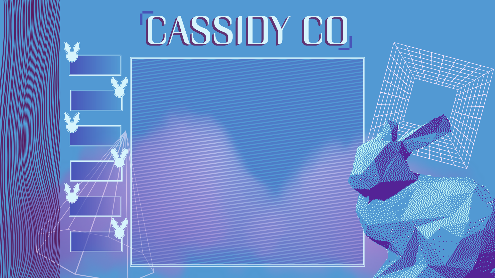

Mechanical engineering / manufacturing systems / technical communication
Ron Kyle Almira builds practical tools for real-world engineering work.
Hands-on mechanical engineer based near St. Louis, with experience designing fabricated hardware,
implementing local MRP tooling, deploying PDM workflows, and documenting technical processes clearly enough
for teams to use them.
B.S.Mechanical Engineering, UMSL / Washington University Joint Program
MRPLocally hosted inventory and material-flow tooling
PDMAutodesk Vault documentation and change tracking
Selected work
Built around the gap between design intent and shop-floor reality.
01
Electronic locomotive drivetrain support
Designed and fabricated structural brackets and electronics mounts for electric locomotive vehicles,
reviewing designs against production constraints and real installation needs.
Structural brackets and mounting concepts
Fabrication-aware design review
Cross-functional engineering and manufacturing collaboration
02
Local MRP inventory system
Developed and implemented a locally hosted web application to support material requirements planning,
inventory visibility, and manufacturing material flow.
Material tracking and production support
Workflow documentation for operators
Practical tooling built around manufacturing behavior
03
PDM and technical documentation
Deployed Autodesk Vault workflows to improve product data management, manufacturing documentation
control, and engineering change tracking.
Documentation control
Engineering change visibility
Process plans and operator procedures
04
Website design + build: wirenook.net
A web project I designed and built from the ground up with HTML, CSS, and JavaScript, focused on clear
presentation and a simple, polished user experience.
Tools, parts, docs, and people all have to line up.
Ron's work sits at the practical edge of mechanical engineering: CAD models, fabricated parts, data systems,
bench testing, and clear instructions. The value is not just in making a component or a spreadsheet exist;
it is in making the next person able to build, find, test, revise, and trust the work.
Visual communication, presentation graphics, product visuals, documentation polish, and design support for technical materials.

UI / UX design
Interface layouts, user flows, tool-friendly screens, and clear product experiences for engineering and operations work.
Web tools & deployment
Custom web tools, .NET-based utilities, deployment support, and practical software help for manufacturing and team workflows.
Project management
Task tracking, workflow organization, process cleanup, planning support, and keeping cross-functional work moving.
PLM & documentation
Product lifecycle support, documentation control, change tracking, PLM-friendly organization, and structured system thinking.
Background
Recent engineering path
Mechanical Engineer Intern & Co-Op, Intramotev
Supported electric locomotive vehicle development through hardware design, MRP implementation, PDM
deployment, sound projection prototypes, and manufacturing documentation.
Mechanical Engineering, UMSL / Washington University Joint Program
Completed mechanical engineering coursework and lab work across mechanics, thermodynamics, fluids,
materials, design analysis, and simulation.